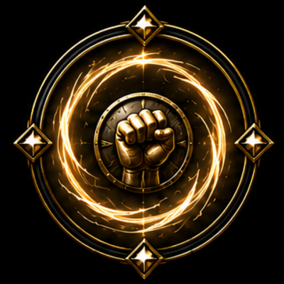
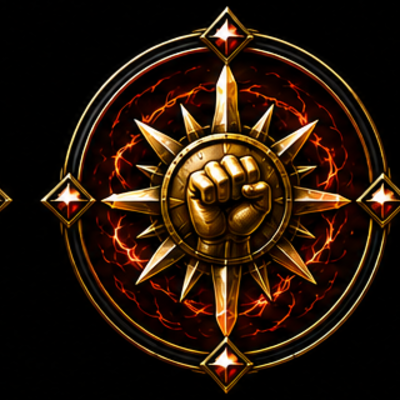
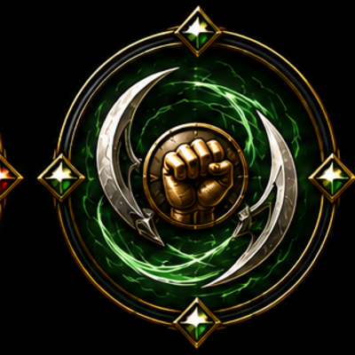
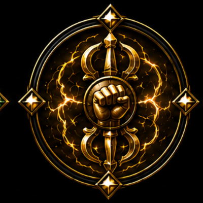
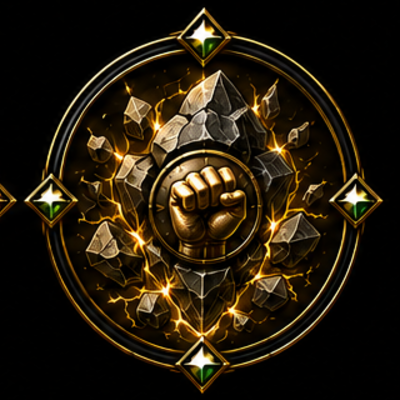
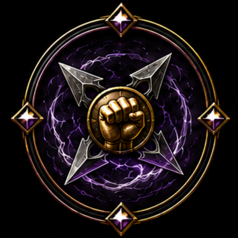
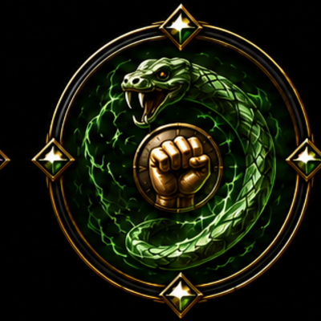
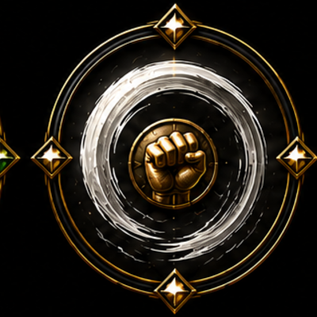
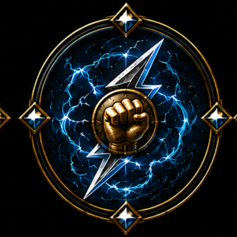
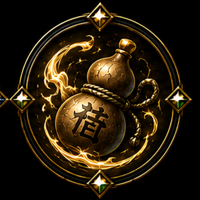

Monk Subclass Icons — assigned
Cut from source art and installed at icons/monk/ — live in the Character Codex.

Initiateamber chi swirl

Pugilistred solar flare

Skirmishergreen crescent claws

Vajragold vajra / lightning

Stonefiststone shards

Infiltratorpurple shuriken

Viper Fangjade serpent

Asceticwhite cyclone

Thunderfistblue lightning

Drunken Mastergourd